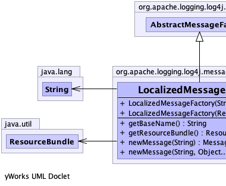
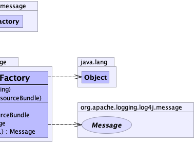

public class LocalizedMessageFactory extends AbstractMessageFactory
FormattedMessage instances for MessageFactory2 methods (and MessageFactory by
extension.)
This class does not implement any MessageFactory2 methods and lets the superclass funnel those calls
through newMessage(String, Object...).
|  |  |
| Constructor and Description |
|---|
LocalizedMessageFactory(java.util.ResourceBundle resourceBundle) |
LocalizedMessageFactory(java.lang.String baseName) |
| Modifier and Type | Method and Description |
|---|---|
java.lang.String |
getBaseName()
Gets the resource bundle base name if set.
|
java.util.ResourceBundle |
getResourceBundle()
Gets the resource bundle if set.
|
Message |
newMessage(java.lang.String key)
Creates a new message based on a String.
|
Message |
newMessage(java.lang.String key,
java.lang.Object... params)
Creates
LocalizedMessage instances. |
newMessage, newMessage, newMessage, newMessage, newMessage, newMessage, newMessage, newMessage, newMessage, newMessage, newMessage, newMessagepublic LocalizedMessageFactory(java.util.ResourceBundle resourceBundle)
public LocalizedMessageFactory(java.lang.String baseName)
public java.lang.String getBaseName()
public java.util.ResourceBundle getResourceBundle()
public Message newMessage(java.lang.String key)
MessageFactorynewMessage in interface MessageFactorynewMessage in class AbstractMessageFactorykey - a message Stringpublic Message newMessage(java.lang.String key, java.lang.Object... params)
LocalizedMessage instances.key - The key String, used as a message if the key is absent.params - The parameters for the message at the given key.MessageFactory.newMessage(String, Object...)